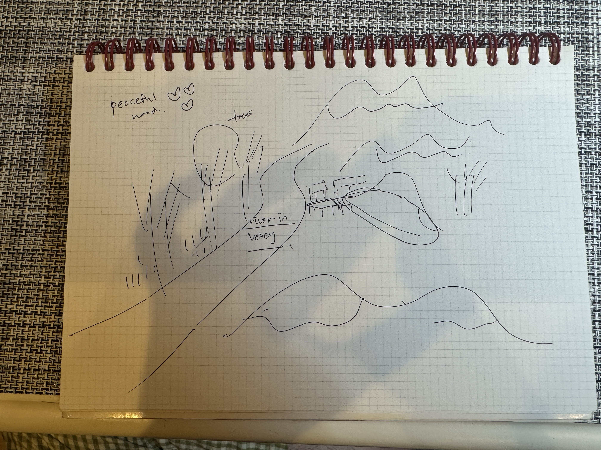
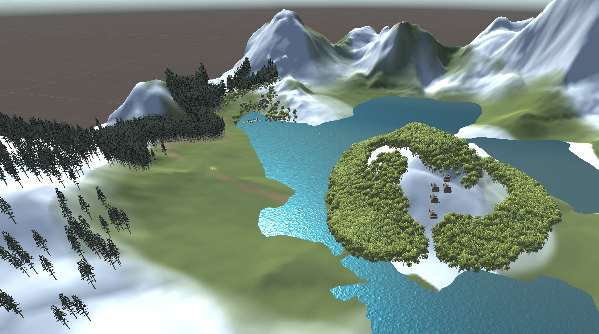
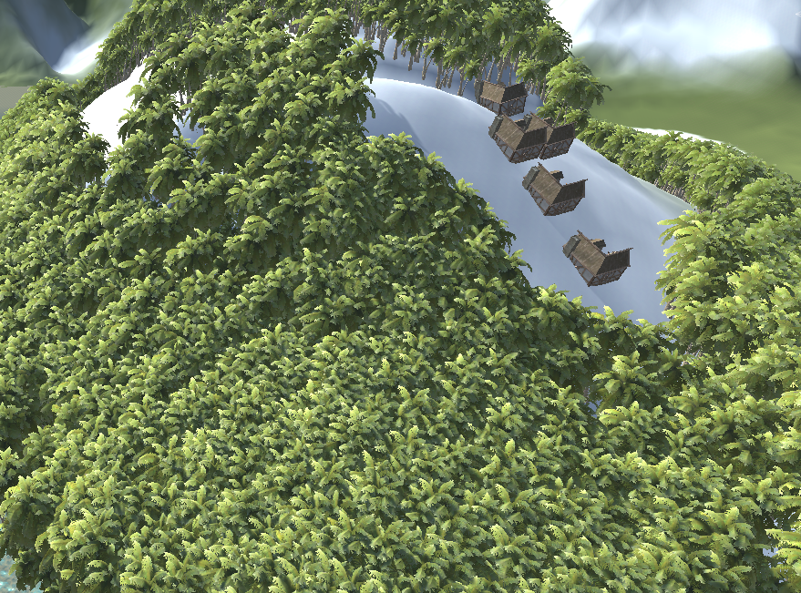
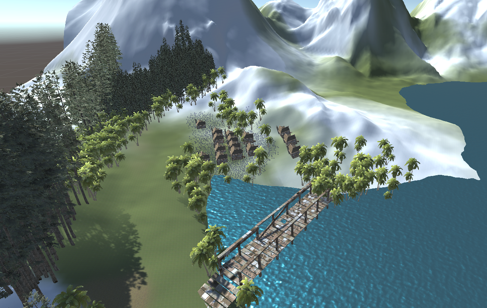
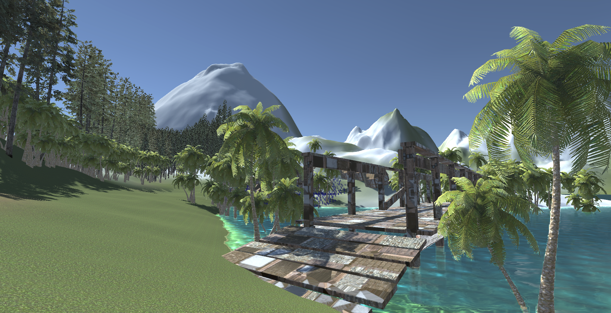
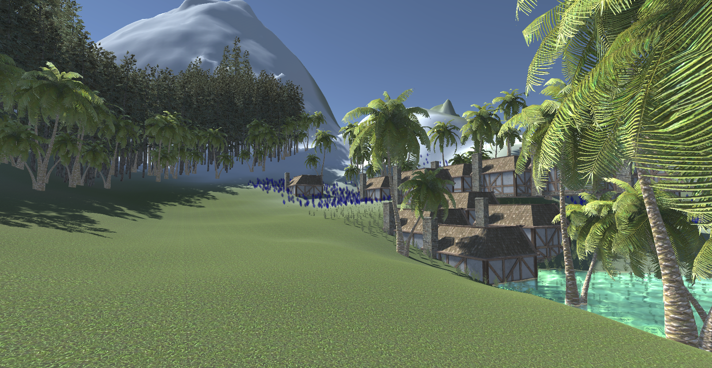

I’ve traveled to over 30 cities, but the place I found most livable was Switzerland. It’s the one place I truly hope to return to after retirement, so I’ve chosen to depict Switzerland as my dream destination.
What I remember most from Switzerland were the countless trees in the snow and the wooden houses. Walking along the river in Vevey felt almost like a dream. I created this with the hope that I can return there someday in my retirement.
    